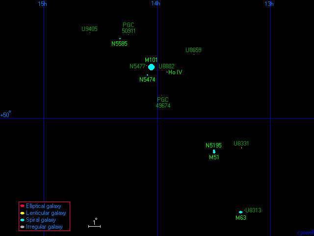
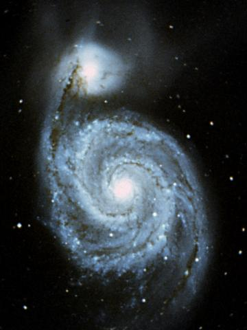
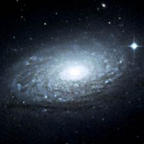
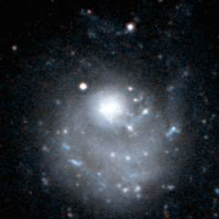
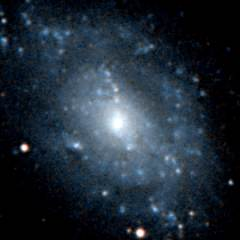
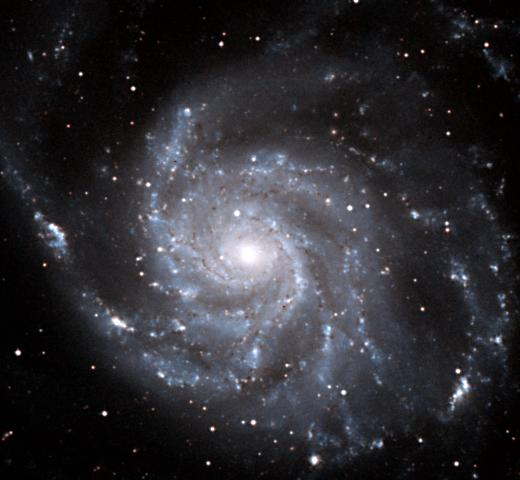

مجموعة M101 تحتوي على المجرة العملاقة M101 والمجرة الشهيرة جدًا M51 أو مجرة الدوامة. مجرة ثالثة لامعة - M63 - هي على الأرجح (وإن لم يكن بشكل مؤكد) عضو أيضًا في هذه المجموعة.

|
 M51 وNGC 5195 |
هذه صورة لـ M51 والمجرة المرافقة الأصغر NGC 5195. M51 هي مجرة مشهورة جدًا. حدث لها مؤخرًا لقاء قريب مع NGC 5195، وكان لهذا اللقاء تأثير في إنتاج أذرع حلزونية واضحة جدًا في M51، بالإضافة إلى نشر مليارات النجوم من NGC 5195 في الفضاء بين المجرات. فقط في السنوات الأخيرة أصبحت تقديرات المسافة دقيقة بما يكفي لإظهار أن هاتين المجرتين هما عضوان مؤكدان في مجموعة M101. |
هذه قائمة بأهم المجرات في مجموعة M101. لم يتم دراسة هذه المجموعة بشكل صحيح، لذا تحتوي هذه القائمة فقط على المجرات التي يُحتمل أن تكون أعضاء فيها. UGC8331، M51، NGC5195، M101، NGC5474، NGC5477، NGC5585، وUGC9405 هي جميعها أعضاء مؤكدون في هذه المجموعة - بينما المجرات الأخرى أقل تأكيدًا.
| قائمة المجرات الرئيسية في التجمع المجري M101 | ||||||||
|---|---|---|---|---|---|---|---|---|
| الاسم | الإحداثيات الاستوائية مطلع مستقيم RA ميل Dec |
القدر الأزرق | النوع | الحجم الزاوي دقائق قوسية(′) |
الحجم (ألف سنة ضوئية) |
سرعة التقهقر (كم/ث) |
أسماء أخرى | |
| UGC 8313 | 13 13.9 | +42 13 | 14.8 | SBc | 1.6 | 10 | 832 | |
| UGC 8331 | 13 15.5 | +47 30 | 14.6 | Irr | 2.5 | 20 | 443 | DDO 169 |
| M63 | 13 15.8 | +42 02 | 9.3 | Sb | 13.2 | 95 | 709 | NGC 5055 |
| M51 | 13 29.9 | +47 12 | 8.9 | Sb | 9.8 | 70 | 640 | NGC 5194 |
| NGC 5195 | 13 30.0 | +47 16 | 10.5 | S? | 5.6 | 40 | 649 | |
| UGC 8659 | 13 40.6 | +55 26 | 16.2 | Irr | 1.0 | 5 | ? | |
| Holmberg IV | 13 54.7 | +53 54 | 13.8 | Irr | 4.3 | 30 | 276 | UGC 8837 |
| UGC 8882 | 13 57.3 | +54 06 | 15.3 | E | 0.8 | 5 | ? | |
| PGC 49674 | 13 57.6 | +51 58 | 17.3 | Irr | 0.6 | 5 | ? | MCG9-23-21 |
| M101 | 14 03.2 | +54 21 | 8.3 | SBc | 28.8 | 210 | 367 | NGC 5457 |
| NGC 5474 | 14 05.1 | +53 40 | 11.3 | Sc | 4.8 | 35 | 405 | |
| NGC 5477 | 14 05.6 | +54 28 | 14.4 | Sm | 1.7 | 10 | 430 | |
| PGC 50911 | 14 15.2 | +57 05 | 16.5? | Irr | 0.9 | 10 | 432 | KKH 87 |
| NGC 5585 | 14 19.8 | +56 44 | 11.2 | SBc | 5.8 | 40 | 412 | |
| UGC 9405 | 14 35.4 | +57 15 | 14.5 | Irr | 1.7 | 10 | 310 | DDO 194 |
أدناه - ثلاث مجرات في التجمع المجري M101. (على اليمين) M63 هي مجرة لامعة، ولكنها قد تقع خلف مجموعة M101. (في الوسط) NGC 5474 هي مجرة حلزونية مضطربة، وربما مرت بمواجهة قريبة مع M101 في تاريخها الحديث. (على اليسار) NGC 5585 هي مجرة حلزونية غير منتظمة إلى حد ما.
 |
 |
 |
| M63 | NGC 5474 | NGC 5585 |
في الأسفل تظهر مجرة M101. هذه مجرة أخرى مشهورة جدًا. وهي أيضًا مجرة حلزونية كبيرة جدًا - بقطر يزيد عن 200 ألف سنة ضوئية، مما يجعلها ضعف عرض مجرة درب التبانة. قد تكون هذه المجرة واحدة من أكبر المجرات في عنقود العذراء الفائق بأكمله.

| خصائص التجمع المجري M101 | ||
|---|---|---|
| الإحداثيات الاستوائية | RA=14h00m | Dec=+50° |
| الإحداثيات المجرية | l=100° | b=+65° |
| الإحداثيات المجرية الفائقة | L=70° | B=+20° |
| المسافة إلى مركز المجموعة المجرية | 25 مليون سنة ضوئية | |
| عدد المجرات الكبيرة | 7 | |
| أسماء أخرى للمجموعة | مجموعة M101/M51 | |